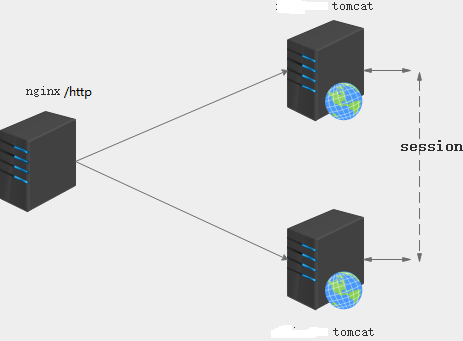
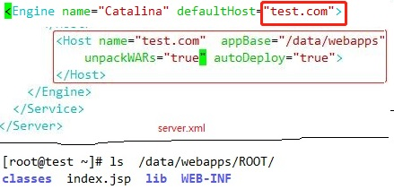
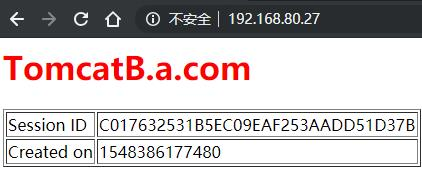
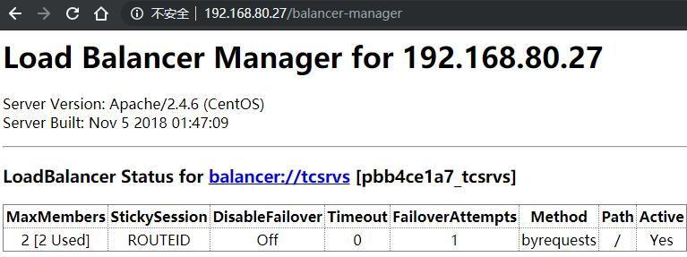
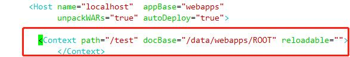
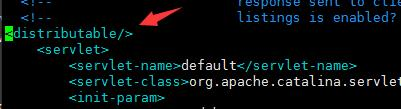

会话保持的重要性
在生成环境中，我们的Tomcat服务器肯定要做冗余或者高可用，如果没有做session保持，那么用户访问页面时只要状态丢失，那么是会造成cookie丢失这种情况的，
会话保持
Session sticky会话粘性：通过在前端调度器的配置中实现统一session发送至同一后发端服务器
缺点：某台后端服务器down，其上面的会话会丢失
nginx 的ip_hash算法，haproxy的url_param算法
source_ip
nginx: ip_hash
haproxy: source
lvs: sh
cookie：
nginx：hash
haproxy: cookie
Session cluster会话集群：通过配置Tomcat保持所有Tomcat的session的信息一致。
通过多播通信的信道，把session信息传递给同一集群的其他主机
在大规模集群中，多播信道会充满多播信息，形成拥塞，造成延迟
Session server 会话服务：将所有的session交给专门的session服务管理。
redis(store), memcached(cache)
存储设备具有主从复制机制
依靠前端进行备份，在主备server上写两份session信息
双写 double write
对数据进行周期性备份

Session sticky
基于BalancerMember的会话粘性实现(http协议)
httpd配置文件，在conf.d/http-tomcat.conf ,新建虚拟主机
Header add Set-Cookie "ROUTEID=.%{BALANCER_WORKER_ROUTE}e; path=/" env=BALANCER_ROUTE_CHANGED
<proxy balancer://tcsrvs>
BalancerMember http://192.168.80.37:8080 route=TomcatA loadfactor=1
BalancerMember http://192.168.80.47:8080 route=TomcatB loadfactor=2
ProxySet lbmethod=byrequests
ProxySet stickysession=ROUTEID
</Proxy>
<VirtualHost *:80>
ServerName lb.a.com
ProxyVia On
ProxyRequests Off
ProxyPreserveHost On
<Proxy *>
Require all granted
</Proxy>
ProxyPass / balancer://tcsrvs/
ProxyPassReverse / balancer://tcsrvs/
<Location />
Require all granted
</Location>
<Location /balancer-manager> 启用管理接口
SetHandler balancer-manager
ProxyPass !
Require all granted
</Location>
</VirtualHost>
基于BalancerMember的会话粘性实现(ajp协议)
httpd配置文件，在conf.d/http-tomcat.conf ,新建虚拟主机
Header add Set-Cookie "ROUTEID=.%{BALANCER_WORKER_ROUTE}e;path=/" env=BALANCER_ROUTE_CHANGED
<proxy balancer://tcsrvs>
BalancerMember ajp://192.168.80.37:8009 route=TomcatA loadfactor=1
BalancerMember ajp://192.168.80.47:8009 route=TomcatB loadfactor=2
ProxySet lbmethod=byrequests
ProxySet stickysession=ROUTEID
</Proxy>
<VirtualHost *:80>
ServerName lb.a.com
ProxyVia On
ProxyRequests Off
ProxyPreserveHost On
<Proxy *>
Require all granted
</Proxy>
ProxyPass / balancer://tcsrvs/
ProxyPassReverse / balancer://tcsrvs/
<Location />
Require all granted
</Location>
<Location /balancer-manager>
SetHandler balancer-manager
ProxyPass !
Require all granted
</Location>
</VirtualHost>
保持会话的方式参考前一种方式。
示例程序：
在tomcat上编辑server.xml,在<Engine>之间

1.在TomcatA上某根目录中index.jsp，提供如下页面
1 | <%@ page language="java" %> |
2.在TomcatB上某context中index.jsp，提供如下页面
1 | <%@ page language="java" %> |
3.测试，提前配置hosts或dns服务器


Session cluster
tomcat的集群session共享方案只适合在小规模集群中(6台左右)使用，当集群节点数量过多时，节点间session复制会产生网络带宽的瓶颈，会产生session复制延迟
1.启用tomcat集群，添加如下定义到< Engine > 或 < Host > 标签中
<Cluster className="org.apache.catalina.ha.tcp.SimpleTcpCluster"/>
使用上述配置将使用DeltaManager to replicate session deltas 启用所有会话复制。通过all-to-all，意味着会话被复制到集群中的所有其他节点。这适用于较小的集群
但不建议将其用于较大的集群（很多Tomcat节点）。此外，在使用增量管理器时，它将复制到所有节点，甚至是未部署应用程序的节点。这种方式并不可靠。默认不会启用这功能
要解决此问题，您将需要使用BackupManager。此管理器仅将会话数据复制到一个备份节点，并且仅复制到已部署应用程序的节点
2.以下是一些启用tomcat集群重要的默认值
多播地址为228.0.0.4
多播端口为45564 ： 用于集群成员关系判断，该端口监地址不能是127.0.0.1
会话复制端口使用范围 ： 4000-4100，默认从4000依次开始
监听器已配置 ClusterSessionListener
两个监听器TcpFailureDetector和MessageDispatch15Interceptor
注意：
时间必须同步
如果使用的是mod_jk，确保在引擎上设置< Engine name="Catalina" jvmRou te="标识" >
mod_jk简称JK，是Apache服务器的一个可插入模块，用以为Apache或IIS服务器提供处理JSP/Servlet的能力
mod_jk实质上是Apache与Tomcat的连接器，并藉此附带提供集群和负载均衡的功能
确保要在web.xml中进行会话复制的应用程序定义<distributable/>元素，不加不会生效
确保会话不丢失，最好做会话绑定
示例：
1.此处定义index.jsp的页面为<host>的<Context>中,内容如上面

每个tomcat中jvmRoute不一样，修改server.xml配置文件
1 | <Engine name="Catalina" defaultHost="localhost" jvmRoute="tcA"> |
2.配置在server.xml中<Host>标签
1 | <Cluster className="org.apache.catalina.ha.tcp.SimpleTcpCluster" |
配置文件介绍
1 | classname配置tomcat集群在进行信息传递时互相使用什么类来进行传递；channelsendoptions可以设置为2,4,8.10； |
3.配置应用程序的web.xml，使其能够被tomcat delta manager管理
默认站点目录没有web.xml文件,可以复制tomcat的全局web.xml值站点目录WEB-INF下，
web.xml在安装目录下是对所有站点程序生效，是全局配置，通常每个站点程序都会有单独的web.xml
cp /usr/local/tomcat/conf/web.xml /usr/local/tomcat/webapps/ROOT/WEB-INF
4.在<web-app></web-app>的范围内加入<distributable/>标签即可
vim web.xml

注意：前端调度器的配置中不能开启session sticky功能
5.